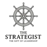

The Chord Beneath the Name
The Three Gifts of the Apex Visionary

The Gift of Prophecy
The Catalyst
Core question: “What is the truth that will unlock transformation here?”
Explore the gift →
The Gift of Teaching
The Erudite
Core question: “Is this subject worthy of my intellectual energy?”
Explore the gift →
The Gift of Leadership
The Strategist
Core question: “Where are we going, and what is the best way to get there?”
Explore the gift →